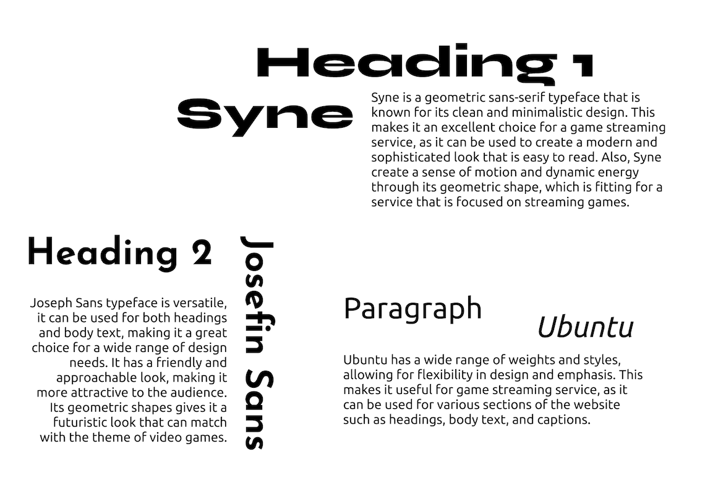

MyLon is a video live streaming service that mainly focuses on video game live streaming. MyLon company doesn’t produce or sell real-life products, rather than hiring or attracting gamers to hold their streaming, then sell virtual gifts to their viewers/audience. Audience could send these gifts they purchase to the streamers they like to support them, which streamers could receive a commission from. On the other hand, gamers and streamers can membership of MyLon to access the features such as a variety of genres, online multiplayer, high-quality streaming, etc.
The potential customer for a video game streaming service would likely be individuals who are passionate about gaming and are looking for a convenient and affordable way to access a wide variety of games. This could include both casual and hardcore gamers, as well as individuals of all ages. They may be looking for a service that allows them to easily play their favourite games on multiple devices, and that offers the ability to play games with friends online.
By building a strong sense of community and social features within the service. For example, MyLon could include forums, chat rooms, or other ways for gamers to connect and share their gaming experiences. It could also include features such as leaderboards, tournaments, and other competitive elements to encourage users to engage with the service more frequently.
Choosen fonts can find in the font folder
